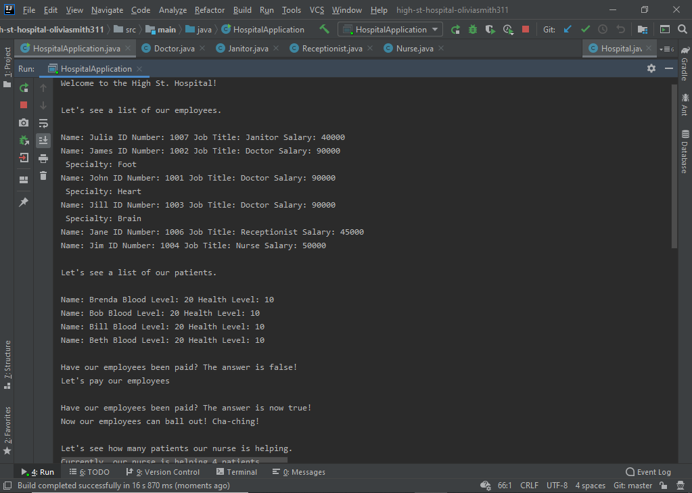

In this project, I worked independently to create an application that told the story of the imaginary High St. Hospital. The application added staff and patients to the hospital, and gave information about each person. The doctors had stats such as salary, job title, and ID number. The patients had a health level and a blood level. An added game element gave users the ability to have either a doctor or nurse perform an action on a patient, to treat them or draw their blood, which affected the patients' health and blood levels.
Skills used: Java, OOP, TDD, Agile (Scrum), Source Control / Git
